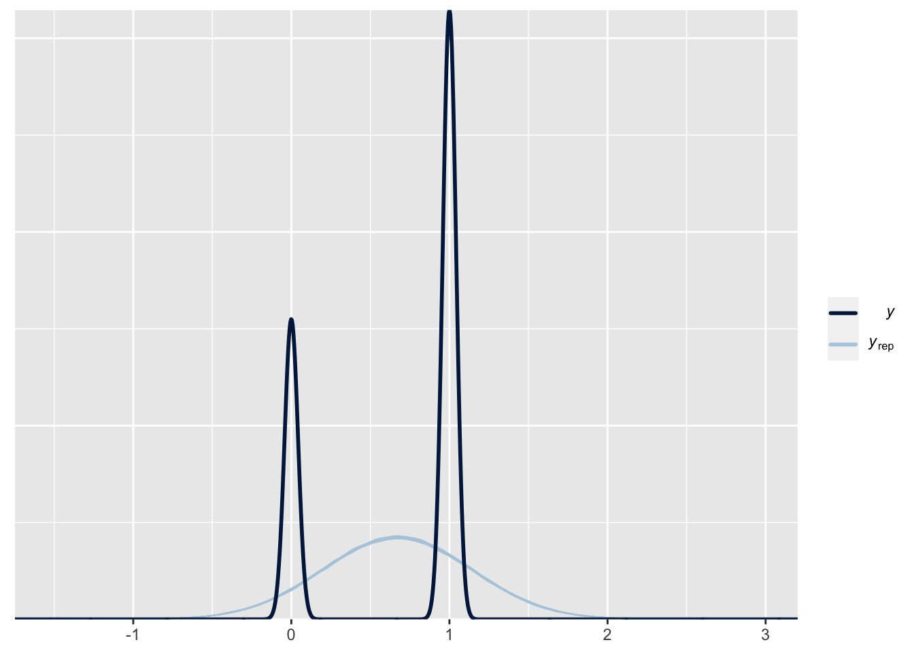
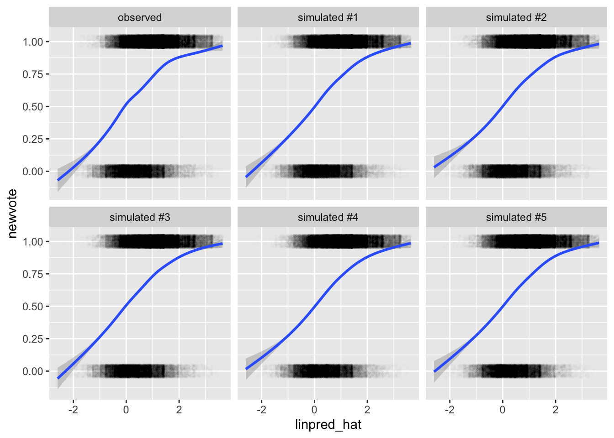
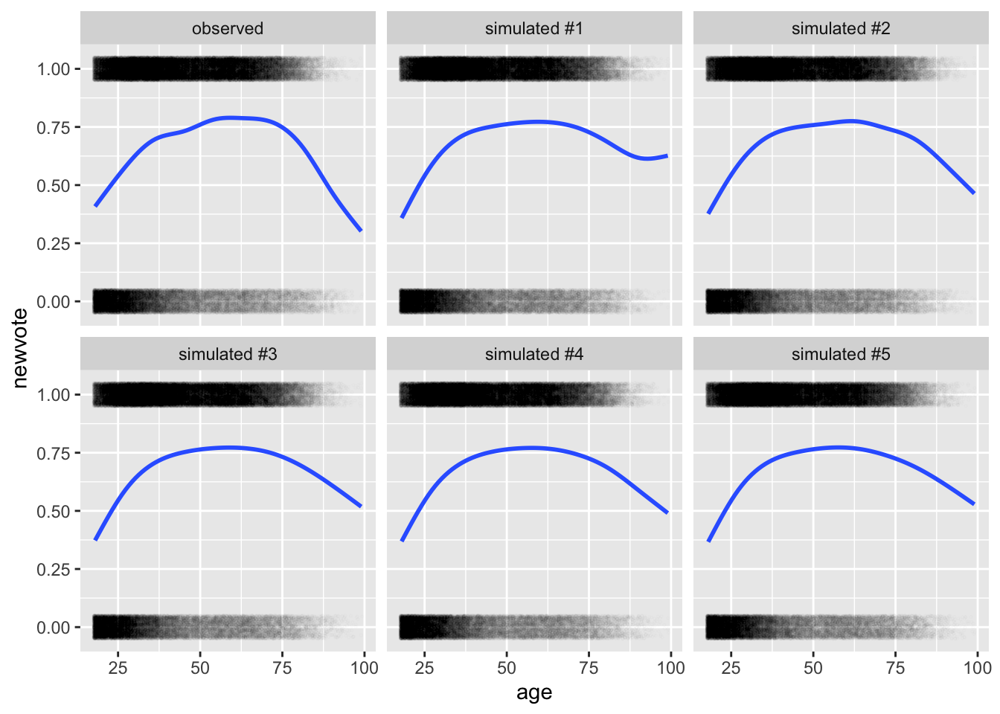
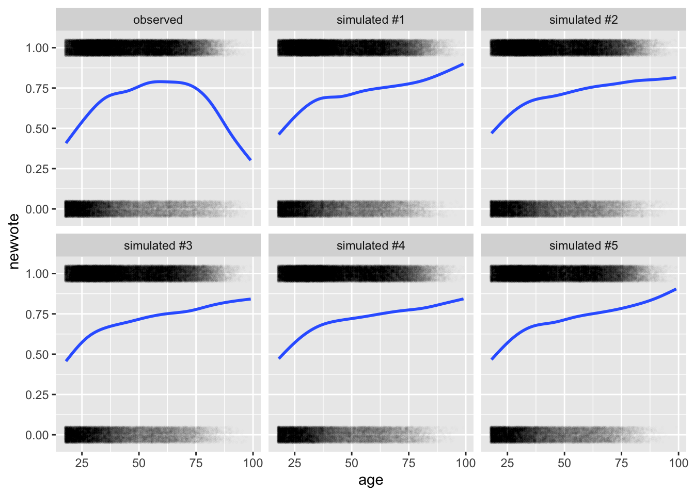
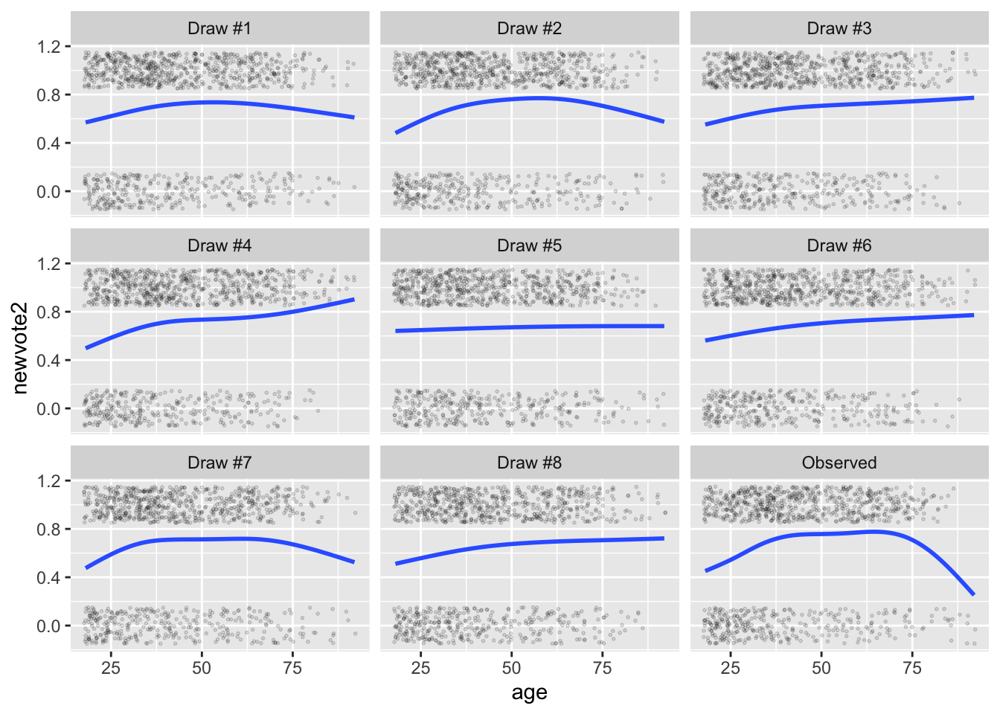
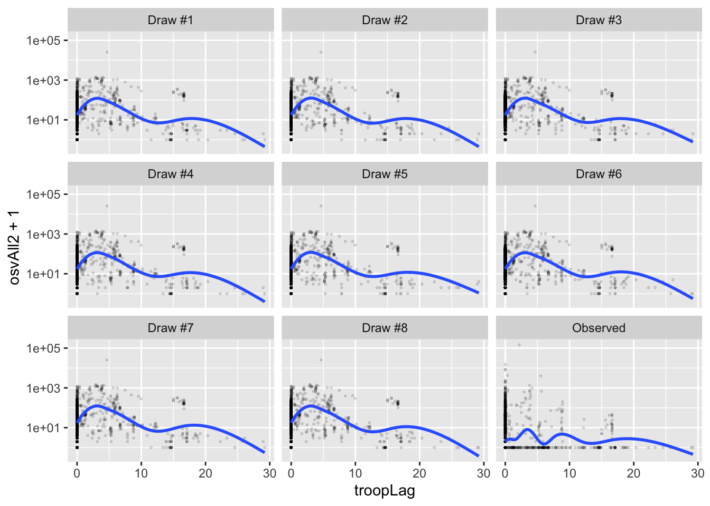

Chapter 3 Week 3: Adding Predictors
So far, we have discussed several major ideas:
- Maximum likelihood to obtain point estimates of model parameters and the invariance property to transform those estimates into quantities of interest. In this framework, we can use the parametric bootstrap to create confidence intervals and the predictive distribution to understand fitted models.
- Bayesian inference to obtain posterior beliefs (i.e., distributions) of model parameters. In most applied cases, we will simulate from the posterior. We can transform those simulations to obtain posterior distributions of the quantities of interest. We can use the posterior predictive distribution to understand the fit.
- We’ve discussed the tools above in the context of the Bernoulli, Poisson, and exponential models. Using the toothpaste cap, binary survey responses, civilian casualties, and government survival data.
Today, we’re going to focus on two narrow parts of models and explore how two current tools generalize to the regression context.
- The linear predictor \(X\beta\).
- The inverse link function.
- How the [posterior] predictive distribution generalizes to regression.
- How quantities of interest generalize to regression.
For this week, we’ll need the following packages:
- rstan/rstanarm
- tidybayes
- Zelig;
devtools::install_github('IQSS/Zelig')
3.1 Review: The Normal Model
To fix ideas, we are going to re-develop the linear model from POS 5746.
We imagine a continuous outcome \(y = \{y_1, y_1,..., y_n\}\) and a set of predictors or “explanatory variables” \(x_1 = \{x_{11}, x_{21}, ..., x_{n1}\}, x_2 = \{x_{12}, x_{22}, ..., x_{n2}\}, ..., x_k = \{x_{1k}, x_{2k}, ..., x_{nk}\}\).
The notation \(y_i\) refers to the \(i\)th observation of the outcome variable.
The notation \(x_{ij}\) refers to the \(i\)th observation of the \(j\)th control variable.
The we write the linear regression model as
\[ y_i = \beta_0 + \beta_1 x_{i1} + \beta_2 x_{i2} + \beta_k x_{ik} + r_i. \]
We might then assume that the \(r_i\)s follow a normal distribution, so that \(r_i \sim N(0, \sigma^2)\) for all \(i\).
The we can define \(\mu_i = \beta_0 + \beta_1 x_{i1} + \beta_2 x_{i2} + \beta_k x_{ik}\) and see that
\[ y_i \sim N(\mu_i, \sigma^2). \] Taking the expectation, we have \(E(y_i \mid x_1, x_2, ... , x_n) = \mu_i = \beta_0 + \beta_1 x_{i1} + \beta_2 x_{i2} + \beta_k x_{ik}\). This is just a conditional average (the average of the outcome conditional on the explanatory variables). Sometimes we refer to this quantity as \(\hat{y}_i\).
There are two important features of this model that I want to explore: the distribution or “stochastic component” and the linear predictor of the model.
3.1.1 Distribution
This model uses the normal distribution to describe the unexplained variation in \(y_i - \hat{y}_i\). POS 5746 focuses (mostly) on models that assume a normal distribution for the outcome. King (1998) calls this the “stochastic” component of the model.
For now, simply note that we are not restricted to a normal model, we could easily adapt the model to use a Bernoulli, exponential, or Poisson distribution, for example.
3.1.2 Linear Predictor
The linear predictor \(\beta_0 + \beta_1 x_{i1} + \beta_2 x_{i2} + \beta_k x_{ik}\) is critically important. So we should spend some time to get familiar with it.
For the sake of this exercise, the values of the \(\beta\)s and the \(x_{ij}\)s are arbitrary,
# devtools::install_github('IQSS/Zelig')
data(macro, package = "Zelig")
set.seed(1234)
small_macro <- macro %>%
select(unem, gdp, capmob, trade) %>%
sample_n(5) %>%
mutate(across(.fns = signif, digits = 2))
kableExtra::kable(small_macro, format = "markdown")| unem | gdp | capmob | trade | |
|---|---|---|---|---|
| 284 | 1.5 | 5.2 | -1 | 88 |
| 336 | 2.0 | 4.8 | -1 | 27 |
| 101 | 2.7 | 3.2 | -2 | 74 |
| 111 | 6.8 | 5.3 | 0 | 94 |
| 133 | 2.6 | 5.4 | -1 | 33 |
fit <- lm(unem ~ gdp + capmob + trade, data = small_macro)
signif(coef(fit), digits = 2)## (Intercept) gdp capmob trade
## 19.0000 -2.4000 4.5000 0.0027In-Class Exercise For the \(\beta\)s and the \(x_{ij}\)s above, compute each \(\mu_i\) and \(r_i = y_i - \mu_i\).
Now, let’s bind the explanatory variables into a matrix, so that
\[ X = [x_1, x_2, ..., x_k] = \begin{bmatrix} x_{11} & x_{12} &\dots & x_{1k}\\ x_{21} & x_{22} &\dots & x_{2k}\\ \vdots & \vdots &\ddots & \vdots\\ x_{n1} & x_{n2} & \dots & x_{nk} \end{bmatrix}. \] And let’s bind the \(\beta\)s into a column-vector, so that
\[ \beta = \begin{bmatrix} \beta_{1} \\ \beta_{2} \\ \vdots\\ \beta_{k} \end{bmatrix}. \]
\(\beta = [\beta_0, \beta_1, \beta_2, ..., \beta_k]\).
Notice that we have a \(n \times (k + 1)\) matrix \(X\) and a \((k + 1) x 1\) matrix \(\beta\). I content that the matrix multiplication \(\mu = X\beta\) is identical to \(\mu_i = \beta_0 + \beta_1 x_{i1} + \beta_2 x_{i2} + \beta_k x_{ik}\).
In-Class Exercise For the \(\beta\)s and the \(x_{ij}\)s above, compute each \(\mu = X\beta\) and \(r = y - \mu\).
We can confirm with R.
y <- small_macro$unem
X <- cbind(1,
small_macro$gdp,
small_macro$capmob,
small_macro$trade)
print(X)## [,1] [,2] [,3] [,4]
## [1,] 1 5.2 -1 88
## [2,] 1 4.8 -1 27
## [3,] 1 3.2 -2 74
## [4,] 1 5.3 0 94
## [5,] 1 5.4 -1 33beta <- matrix(signif(coef(fit), digits = 2), ncol = 1)
print(beta)## [,1]
## [1,] 19.0000
## [2,] -2.4000
## [3,] 4.5000
## [4,] 0.0027mu <- X%*%beta; mu## [,1]
## [1,] 2.2576
## [2,] 3.0529
## [3,] 2.5198
## [4,] 6.5338
## [5,] 1.6291r <- small_macro$unem - mu; r## [,1]
## [1,] -0.7576
## [2,] -1.0529
## [3,] 0.1802
## [4,] 0.2662
## [5,] 0.9709From now on, we can just write…
- \(X_i\beta\) rather than \(\beta_0 + \beta_1 x_{i1} + \beta_2 x_{i2} + \beta_k x_{ik}\) (returns a scalar \(\mu_i\))
- \(X\beta\) rather than \(\beta_0 + \beta_1 x_{1} + \beta_2 x_{2} + \beta_k x_{k}\) (returns a vector \(\mu\))
3.1.3 Fitting the Normal-Linear Model
3.1.3.1 Maximum Likelihood
It turns out that the usual least-squares solution from POS 5746 is the maximum likelihood estimate of \(\beta\). And the RMS of the residuals is the ML estimator of \(\sigma\).
beta_hat <- solve(t(X)%*%X)%*%t(X)%*%y
print(beta_hat, digits = 2)## [,1]
## [1,] 18.8277
## [2,] -2.3766
## [3,] 4.5184
## [4,] 0.0027sigma_hat <- sqrt(sum((y - X%*%beta_hat)^2))
print(sigma_hat, digits = 2)## [1] 1.6fit <- lm(unem ~ gdp + capmob + trade, data = small_macro)
arm::display(fit)## lm(formula = unem ~ gdp + capmob + trade, data = small_macro)
## coef.est coef.se
## (Intercept) 18.83 11.64
## gdp -2.38 1.77
## capmob 4.52 2.33
## trade 0.00 0.03
## ---
## n = 5, k = 4
## residual sd = 1.64, R-Squared = 0.85We can get confidence intervals with the parametric bootstrap.
# get ml estimates
fit <- lm(unem ~ gdp + capmob + trade, data = small_macro)
mu_hat <- predict(fit) # same as X%*%beta_hat
sigma_hat <- sqrt(sum(residuals(fit)^2))
# do parametric bootstrap
n_bs <- 100
bs_est <- matrix(NA, ncol = length(coef(fit)), nrow = n_bs)
for (i in 1:n_bs) {
bs_y <- rnorm(nrow(small_macro), mean = mu_hat, sd = sigma_hat)
bs_fit <- update(fit, bs_y ~ .)
bs_est[i, ] <- coef(bs_fit)
}
# compute the quantiles for each coef
apply(bs_est, 2, quantile, probs = c(0.05, 0.95))## [,1] [,2] [,3] [,4]
## 5% 0.6518702 -4.9998081 1.690274 -0.04557350
## 95% 35.5920062 0.4865889 7.987606 0.063633543.1.3.2 Bayesian
The stan_glm() function allows us to easily get posterior simulations for the coefficients (and \(\sigma\)) for the normal linear model.
library(rstanarm); options(mc.cores = parallel::detectCores())
stan_fit <- stan_glm(unem ~ gdp + capmob + trade, data = small_macro,
family = "gaussian",
chains = 1,
prior = NULL,
prior_intercept = NULL)print(stan_fit)## stan_glm
## family: gaussian [identity]
## formula: unem ~ gdp + capmob + trade
## observations: 5
## predictors: 4
## ------
## Median MAD_SD
## (Intercept) 19.3 11.7
## gdp -2.4 1.7
## capmob 4.5 2.3
## trade 0.0 0.0
##
## Auxiliary parameter(s):
## Median MAD_SD
## sigma 1.8 0.9
##
## ------
## * For help interpreting the printed output see ?print.stanreg
## * For info on the priors used see ?prior_summary.stanreg3.1.4 Applied Example
# load data
cg <- read_csv("data/parties.csv") %>%
glimpse()## Rows: 555
## Columns: 10
## $ country <chr> "Albania", "Albania", "Albania", "Argentina", "Ar…
## $ year <dbl> 1992, 1996, 1997, 1946, 1951, 1954, 1958, 1960, 1…
## $ average_magnitude <dbl> 1.00, 1.00, 1.00, 10.53, 10.53, 4.56, 8.13, 4.17,…
## $ eneg <dbl> 1.106929, 1.106929, 1.106929, 1.342102, 1.342102,…
## $ enep <dbl> 2.190, 2.785, 2.870, 5.750, 1.970, 1.930, 2.885, …
## $ upper_tier <dbl> 28.57, 17.86, 25.80, 0.00, 0.00, 0.00, 0.00, 0.00…
## $ en_pres <dbl> 0.00, 0.00, 0.00, 2.09, 1.96, 1.96, 2.65, 2.65, 3…
## $ proximity <dbl> 0.00, 0.00, 0.00, 1.00, 1.00, 0.20, 1.00, 0.20, 1…
## $ social_heterogeneity <chr> "Bottom 3rd of ENEG", "Bottom 3rd of ENEG", "Bott…
## $ electoral_system <chr> "Single-Member District", "Single-Member District…# fitting model with ls/ml
f <- enep ~ eneg*log(average_magnitude) + eneg*upper_tier + en_pres*proximity
fit <- lm(f, data = cg)
arm::display(fit, detail = TRUE)## lm(formula = f, data = cg)
## coef.est coef.se t value Pr(>|t|)
## (Intercept) 2.81 0.20 14.31 0.00
## eneg 0.19 0.08 2.47 0.01
## log(average_magnitude) 0.33 0.11 2.88 0.00
## upper_tier 0.05 0.01 4.98 0.00
## en_pres 0.35 0.07 4.84 0.00
## proximity -3.42 0.38 -8.98 0.00
## eneg:log(average_magnitude) 0.08 0.06 1.28 0.20
## eneg:upper_tier -0.02 0.00 -3.37 0.00
## en_pres:proximity 0.80 0.15 5.34 0.00
## ---
## n = 555, k = 9
## residual sd = 1.59, R-Squared = 0.30# fitting model with Stan
fit <- stan_glm(f, data = cg, chains = 1)print(fit)## stan_glm
## family: gaussian [identity]
## formula: enep ~ eneg * log(average_magnitude) + eneg * upper_tier + en_pres *
## proximity
## observations: 555
## predictors: 9
## ------
## Median MAD_SD
## (Intercept) 2.8 0.2
## eneg 0.2 0.1
## log(average_magnitude) 0.3 0.1
## upper_tier 0.0 0.0
## en_pres 0.3 0.1
## proximity -3.4 0.4
## eneg:log(average_magnitude) 0.1 0.1
## eneg:upper_tier 0.0 0.0
## en_pres:proximity 0.8 0.1
##
## Auxiliary parameter(s):
## Median MAD_SD
## sigma 1.6 0.0
##
## ------
## * For help interpreting the printed output see ?print.stanreg
## * For info on the priors used see ?prior_summary.stanreg3.2 Bernoulli Model
In the case of the normal model, we used \(y_i \sim N(\mu_i, \sigma^2)\), where \(\mu_i = X_i\beta\). The normal model does a great job with roughly continuous outcomes like ENEP.
But sometimes we care about binary outcomes.
- Binary outcomes are categorical outcome variables with exactly two categories, such as whether or not someone voted, whether two countries are at war, and so on.
- These variables are usually coded as \(y_i \in \{0, 1\}\), with one representing “an event” and zero representing “a non-event.”
- In generic language, we’ll say that \(y_i = 1\) means that “an event has occurred” and \(y_i = 0\) means that “an event has not occurred.”
- This allows us to talk about the “probability of an event” (e.g., the probability of war, etc)
The normal model cannot describe a binary outcome well. But it doesn’t make much conceptual sense to model 0s and 1s as following a normal distribution.
3.2.1 The Linear Probability Model
We can use the linear model (i.e., OLS) with binary outcome variables.
- Recall that we the linear model is represented by the equation \(E(y_i) = X_i\beta\).
- It is important to note that a probability is just a particular kind of expected value—a probability is an expected value of a binary variable.
- Since \(y_i\) is binary, the \(E(y_i) = \Pr(y_i = 1) = \Pr(y_i)\), giving us \(\Pr(y_i) = X_i\beta\).
The LPM has two advantages:
- It’s is very easy to estimate (i.e., OLS; \(\hat{\beta} = (X'X)^{-1}X'y\)).
- It is easy to interpret (i.e., a one unit change in \(x_j\) leads to a \(\hat{\beta_j}\) unit increase in \(\Pr(y)\)).
The LPM has several disadvantages
- Unbounded Predictions Because the potential values for the explanatory variables are unbounded, you can obtain predicted probabilities above one and below zero. Of course, these predictions make no sense.
- Conditional Heteroskedasticity The normal-linear model assumes a constant variance \(\sigma^2\). However, it is impossible to have homoskedastic residuals of a binary outcome if the probability of an event varies. Specifically, if \(y_i\) is binary, then \(\text{Var}(y_i) = \Pr(y_i)[1 - \Pr(y_i)]\), which, for the LPM, equals \(X_i\beta(1 - X_i\beta)\). (Non-zero coefficients imply heteroskedasticity.)
- Non-Normal Errors Normal errors implies that the residuals can take on any value along the real line, with values closer to zero being more likely and errors outside three standard deviations being quite unlikely. However, if \(y_i\) is binary, then the residual can take on only two values: \(-Pr(y_i)\) or \(1 - Pr(y_i)\).
- Functional Form Theoretically, you’d probably expect explanatory variables to have smaller effects as \(Pr(y_i)\) approaches zero or one (called “compression”). The LPM assumes that the effects are constant.
Let’s fit the normal model to data from Wolfinger and Rosenstone (1993), Nagler (1994, the “Scobit” paper), and Berry, DeMeritt, and Esarey (2010).
scobit <- haven::read_dta("data/scobit.dta") %>%
filter(newvote != -1) %>% # weird -1s in data; unsure if sufficient
glimpse()## Rows: 99,676
## Columns: 16
## $ state <dbl> 93, 93, 93, 93, 93, 93, 93, 93, 93, 93, 93, 93, 93, 93, 93, 9…
## $ vote <dbl> 1, 1, 2, 1, 1, 1, 2, 1, 1, 1, 1, 1, 1, 1, 1, 1, 1, 1, 1, 2, 2…
## $ age <dbl> 60, 80, 32, 25, 55, 63, 20, 53, 49, 27, 58, 56, 34, 34, 35, 3…
## $ educ <dbl> 13, 13, 13, 13, 11, 14, 11, 11, 13, 13, 11, 13, 19, 19, 15, 1…
## $ citizen <dbl> 1, 1, 1, 1, 1, 1, 1, 1, 1, 1, 1, 1, 1, 1, 1, 1, 1, 1, 1, 1, 1…
## $ rweight <dbl> 207134, 215836, 184639, 184883, 168557, 179148, 181510, 19285…
## $ south <dbl> 0, 0, 0, 0, 0, 0, 0, 0, 0, 0, 0, 0, 0, 0, 0, 0, 0, 0, 0, 0, 0…
## $ gov <dbl> 0, 0, 0, 0, 0, 0, 0, 0, 0, 0, 0, 0, 0, 0, 0, 0, 0, 0, 0, 0, 0…
## $ closing <dbl> 29, 29, 29, 29, 29, 29, 29, 29, 29, 29, 29, 29, 29, 29, 29, 2…
## $ age2 <dbl> 3600, 6400, 1024, 625, 3025, 3969, 400, 2809, 2401, 729, 3364…
## $ educ2 <dbl> 25, 25, 25, 25, 16, 36, 16, 16, 25, 25, 16, 25, 64, 64, 36, 2…
## $ cloeduc <dbl> 145, 145, 145, 145, 116, 174, 116, 116, 145, 145, 116, 145, 2…
## $ cloeduc2 <dbl> 725, 725, 725, 725, 464, 1044, 464, 464, 725, 725, 464, 725, …
## $ newvote <dbl> 1, 1, 0, 1, 1, 1, 0, 1, 1, 1, 1, 1, 1, 1, 1, 1, 1, 1, 1, 0, 0…
## $ newage <dbl> 0, 0, 0, 0, 0, 0, 0, 0, 0, 0, 0, 0, 0, 0, 0, 0, 0, 0, 0, 0, 0…
## $ neweduc <dbl> 5, 5, 5, 5, 4, 6, 4, 4, 5, 5, 4, 5, 8, 8, 6, 5, 5, 3, 5, 1, 6…f <- newvote ~ poly(neweduc, 2, raw = TRUE) + closing + poly(age, 2, raw = TRUE) + south + gov
fit <- lm(f, data = scobit)
mu_hat <- predict(fit) # the linear predictor for each row of data frame
sigma_hat <- sqrt(sum(residuals(fit)^2))
y_tilde <- rnorm(nrow(scobit), mu_hat, sigma_hat)
# note: the code below uses variables NOT in the data frame; this is sloppy
library(patchwork)
gg1 <- ggplot(scobit, aes(x = mu_hat, y = newvote)) +
geom_jitter(height = 0.05, alpha = 0.1, shape = 21, size = 0.3)
gg2 <- ggplot(scobit, aes(x = mu_hat, y = y_tilde)) +
geom_point(alpha = 0.1, shape = 21, size = 0.3)
gg1 + gg2
rstanarm has a convenient pp_check() function that allows you to compare the posterior predictive distribution to the observed distribution.
library(rstanarm); options(mc.cores = parallel::detectCores())
stan_fit <- stan_glm(f, data = scobit, family = "gaussian", chains = 1)pp_check(stan_fit)
3.2.2 The Logit Model
As an initial effort to handle the “non-normal” distribution of the data, we might then use the Bernoulli model \(y_i \sim \text{Bernoulli}(\pi_i)\), where \(\pi_i = X_i\beta\). However, this has a big problem that can make the approach unworkable: \(X_i\beta\) might be less than zero or greater than one.
To address bounds of \(\pi_i\) and \(X_i\beta\), we are going to introduce a new concept called the “inverse link function.” Many of the “disadvantages” of the LPM above follow from the fact that the linear predictor is unbounded. For the normal model, the inverse link function is not necessary because the parameter of interest \(\mu\) is unbounded and maps to the entire real line. But for other models, the key parameter has a restricted domain. In the case of the Bernoulli distribution, \(\pi_i \in [0, 1] \subset \mathbb{R}\).
The idea of the inverse link function is to wrap around the linear predictor and force its values into the desired domain.
For the Bernoulli distribution, we might use the inverse link function \(g^{-1}(x) = \frac{e^x}{1 + e^x}\). This is called the “inverse logit” and it has an “S”-shape. It’s job is to map \(X\beta\) into \([0, 1]\). (It’s also the cdf of the standard logistic distribution.)
inv_logit <- function(x) {
(exp(x))/(1 + exp(x))
}
ggplot() +
xlim(-10, 10) +
stat_function(fun = inv_logit)Hint: The inverse-logit function is the cdf of the standard logistic distribution, so you can just use plogis() in R, rather than hard-coding the inv_logit() function I create above.
Swapping the normal distribution for the Bernoulli and adding the inverse-logit inverse-link function gives us the logit model (or “logistic regression”).
\[ y_i \sim \text{Bernoulli}(\pi_i)\text{, where } \pi_i = \text{logit}^{-1}(X_i\beta). \]
We can fit this model using maximum likelihood or posterior simulation.
3.2.3 Fitting a Logit Model
3.2.3.1 With optim()
To develop the log-likelihood of the logit model, we start with the Bernoulli likelihood from Week 1.
\[ f(y; \beta) = L(\beta) = \prod_{i = 1}^{N}\pi_i^{y_i} (1 - \pi_i)^{(1 - y_i)}\text{, where } \pi_i = \text{logit}^{-1}(X_i\beta) \] Taking the log, we have
\[
\log L(\beta) = \sum_{i = 1}^{N} y_i \log \pi_i + \sum_{i = 1}^{N}(1 - y_i) \log(1 - \pi_i)\text{, where } \pi_i = \text{logit}^{-1}(X_i\beta)
\]
We can program this into R for use in optim().
logit_ll <- function(beta, y, X) {
p <- plogis(X%*%beta) # pi is special in R, so I use p
ll <- sum(y*log(p)) + sum((1 - y)*log(1 - p))
return(ll)
}
# alternatively
logit_ll2 <- function(beta, y, X) {
ll <- sum(dbinom(y, size = 1, prob = plogis(X%*%beta), log = TRUE)) # easier to use R's d*() functions
return(ll)
}The tricky part about using optim() here is not the log-likelihood function, but setting up X and y. The code below creates the outcome vector \(y\) and the matrix \(X\) of explanatory variables (with a leading columns of 1s).
# create formula
f <- newvote ~ poly(neweduc, 2, raw = TRUE) + closing + poly(age, 2, raw = TRUE) + south + gov
# obtain the model matrix X
mf <- model.frame(f, data = scobit) # model frame
X <- model.matrix(f, mf) # model matrix X
# obtain the outcome variable y
y <- model.response(mf)Then we can use optim().
# for some reason, this isn't converging
par_start <- c(-3, rep(0, ncol(X) - 1))
opt <- optim(par_start, fn = logit_ll, y = y, X = X,
control = list(fnscale = -1))
opt$par## [1] -3.0546169207 0.2735676715 0.0209478540 -0.0216067192 0.0807472482
## [6] -0.0004976604 -0.0467922614 -0.0362716220# test w/ same X and y; works
coef(glm.fit(X, y, family = binomial()))## (Intercept) poly(neweduc, 2, raw = TRUE)1
## -4.0727861365 0.2426335636
## poly(neweduc, 2, raw = TRUE)2 closing
## 0.0282045522 -0.0132046240
## poly(age, 2, raw = TRUE)1 poly(age, 2, raw = TRUE)2
## 0.1142218082 -0.0008222347
## south gov
## -0.1904026537 0.00527170283.2.3.2 With glm()
fit <- glm(f, data = scobit, family = "binomial")
coef(fit)## (Intercept) poly(neweduc, 2, raw = TRUE)1
## -4.0727861365 0.2426335636
## poly(neweduc, 2, raw = TRUE)2 closing
## 0.0282045522 -0.0132046240
## poly(age, 2, raw = TRUE)1 poly(age, 2, raw = TRUE)2
## 0.1142218082 -0.0008222347
## south gov
## -0.1904026537 0.00527170283.2.3.3 With Stan
small_scobit <- sample_n(scobit, 1000)
stan_fit <- stan_glm(f, data = small_scobit, family = "binomial")summary(stan_fit)##
## Model Info:
## function: stan_glm
## family: binomial [logit]
## formula: newvote ~ poly(neweduc, 2, raw = TRUE) + closing + poly(age,
## 2, raw = TRUE) + south + gov
## algorithm: sampling
## sample: 4000 (posterior sample size)
## priors: see help('prior_summary')
## observations: 1000
## predictors: 8
##
## Estimates:
## mean sd 10% 50% 90%
## (Intercept) -4.2 0.9 -5.3 -4.2 -3.1
## poly(neweduc, 2, raw = TRUE)1 0.3 0.3 -0.1 0.3 0.6
## poly(neweduc, 2, raw = TRUE)2 0.0 0.0 0.0 0.0 0.1
## closing 0.0 0.0 0.0 0.0 0.0
## poly(age, 2, raw = TRUE)1 0.1 0.0 0.1 0.1 0.1
## poly(age, 2, raw = TRUE)2 0.0 0.0 0.0 0.0 0.0
## south -0.2 0.2 -0.4 -0.2 0.0
## gov 0.5 0.2 0.2 0.5 0.7
##
## Fit Diagnostics:
## mean sd 10% 50% 90%
## mean_PPD 0.7 0.0 0.6 0.7 0.7
##
## The mean_ppd is the sample average posterior predictive distribution of the outcome variable (for details see help('summary.stanreg')).
##
## MCMC diagnostics
## mcse Rhat n_eff
## (Intercept) 0.0 1.0 2824
## poly(neweduc, 2, raw = TRUE)1 0.0 1.0 2691
## poly(neweduc, 2, raw = TRUE)2 0.0 1.0 2640
## closing 0.0 1.0 4161
## poly(age, 2, raw = TRUE)1 0.0 1.0 2395
## poly(age, 2, raw = TRUE)2 0.0 1.0 2393
## south 0.0 1.0 4324
## gov 0.0 1.0 3897
## mean_PPD 0.0 1.0 4337
## log-posterior 0.1 1.0 1525
##
## For each parameter, mcse is Monte Carlo standard error, n_eff is a crude measure of effective sample size, and Rhat is the potential scale reduction factor on split chains (at convergence Rhat=1).3.3 Poisson Model
We’ve now got two models:
\[ y_i \sim N(\mu_i, \sigma^2)\text{, where } \mu_i = X_i\beta \]
and \[ y_i \sim \text{Bernoulli}(\pi_i)\text{, where } \pi_i = \text{logit}^{-1}(X_i\beta). \] We can extend this in many ways by modifying the distribution \(f\) and the inverse-link function \(g^{-1}\) appropriately.
\[ y_i \sim f(\theta_i)\text{, where } \theta_i = g^{-1}(X_i\beta). \]
In the case of the normal model, \(f\) and \(g^{-1}\) are the normal distribution and the identity function. In the case of the logit model, they are the Bernoulli distribution and the inverse logit function.
To build a Poisson regression model, we can use the Poisson distribution for \(f\). We just need to identify an appropriate inverse-link function.
The Poisson distribution has a mean parameter \(\lambda\) that must be positive. Therefore, we need a function that maps the real line to the positive (or non-negative) reals. The exponential function \(g^{-1}(x) = e^x\) does this.
\[ y_i \sim \text{Poisson}(\lambda_i)\text{, where } \lambda_i = e^{X_i\beta}. \]
We can program the log-likelihood function into R for use in optim().
# create log-likelihood
poisson_ll <- function(beta, y, X) {
lambda <- exp(X%*%beta)
ll <- sum(dpois(y, lambda = lambda, log = TRUE))
return(ll)
}
# load hks data
hks <- read_csv("data/hks.csv") %>%
na.omit()## Rows: 3972 Columns: 10
## ── Column specification ────────────────────────────────────────────────────────
## Delimiter: ","
## dbl (10): osvAll, troopLag, policeLag, militaryobserversLag, brv_AllLag, osv...
##
## ℹ Use `spec()` to retrieve the full column specification for this data.
## ℹ Specify the column types or set `show_col_types = FALSE` to quiet this message.# create X and y
f <- osvAll ~ troopLag + policeLag + militaryobserversLag +
brv_AllLag + osvAllLagDum + incomp + epduration +
lntpop
mf <- model.frame(f, data = hks) # model frame
X <- model.matrix(f, mf) # model matrix X
y <- model.response(mf) # outcome variable y
par_start <- rep(0, ncol(X))
# this poisson model is so bad that optim has a bit of trouble
# intutitively, there's a single outlier that basically makes
# all poissons nearly impossible.
opt <- optim(par_start, fn = poisson_ll, y = y, X = X,
control = list(fnscale = -1))
opt$par## [1] -2.032493946 0.056296852 -1.000415138 -0.629900495 -0.002084798
## [6] -0.015359471 1.949812320 -0.009831003 0.357133706Or we can use the glm() function.
fit <- glm(f, data = hks, family = poisson)
coef(fit)## (Intercept) troopLag policeLag
## -3.579287811 -0.169658063 -3.272474092
## militaryobserversLag brv_AllLag osvAllLagDum
## 8.099848984 0.000560565 0.291144441
## incomp epduration lntpop
## 3.486201819 -0.022230231 0.189391395We could also use stan_glm() to obtain simulations from the posterior distribution.
3.3.1 Predictive Distribution
observed_data <- hks %>%
mutate(type = "observed",
linpred_hat = predict(fit, type = "link"))
sim_list <- list()
for (i in 1:5) {
sim_list[[i]] <- observed_data %>%
mutate(osvAll = rpois(nrow(observed_data),
lambda = exp(observed_data$linpred_hat)),
type = paste0("simulated #", i))
}
gg_data <- bind_rows(sim_list) %>%
bind_rows(observed_data) %>%
glimpse()## Rows: 22,476
## Columns: 12
## $ osvAll <dbl> 284, 345, 1139, 284, 450, 214, 199, 201, 180, 199…
## $ troopLag <dbl> 0, 0, 0, 0, 0, 0, 0, 0, 0, 0, 0, 0, 0, 0, 0, 0, 0…
## $ policeLag <dbl> 0, 0, 0, 0, 0, 0, 0, 0, 0, 0, 0, 0, 0, 0, 0, 0, 0…
## $ militaryobserversLag <dbl> 0, 0, 0, 0, 0, 0, 0, 0, 0, 0, 0, 0, 0, 0, 0, 0, 0…
## $ brv_AllLag <dbl> 0, 138, 2428, 30, 850, 0, 0, 0, 0, 0, 0, 0, 0, 0,…
## $ osvAllLagDum <dbl> 1, 1, 1, 1, 1, 0, 0, 0, 0, 0, 0, 0, 0, 0, 0, 0, 0…
## $ incomp <dbl> 2, 2, 2, 2, 2, 2, 2, 2, 2, 2, 2, 2, 2, 2, 2, 2, 2…
## $ epduration <dbl> 2, 3, 4, 5, 6, 7, 8, 9, 10, 11, 12, 13, 14, 15, 1…
## $ lntpop <dbl> 10.88525, 10.88525, 10.88525, 10.88525, 10.88525,…
## $ conflict_id <dbl> 70, 70, 70, 70, 70, 70, 70, 70, 70, 70, 70, 70, 7…
## $ type <chr> "simulated #1", "simulated #1", "simulated #1", "…
## $ linpred_hat <dbl> 5.701372, 5.756500, 7.017963, 5.651498, 6.088931,…ggplot(gg_data, aes(x = linpred_hat, y = osvAll + 1)) +
geom_point(alpha = 0.1, shape = 21, size = 0.3) +
facet_wrap(vars(type)) +
scale_y_log10()ggplot(gg_data, aes(x = troopLag, y = osvAll + 1)) +
geom_point(alpha = 0.3, shape = 21, size = 0.3) +
facet_wrap(vars(type)) +
scale_y_log10() +
geom_smooth(se = FALSE)## `geom_smooth()` using method = 'gam' and formula 'y ~ s(x, bs = "cs")'3.3.2 Posterior Predictive Distribution
library(rstanarm); options(mc.cores = parallel::detectCores())## Loading required package: Rcpp## This is rstanarm version 2.21.1## - See https://mc-stan.org/rstanarm/articles/priors for changes to default priors!## - Default priors may change, so it's safest to specify priors, even if equivalent to the defaults.## - For execution on a local, multicore CPU with excess RAM we recommend calling## options(mc.cores = parallel::detectCores())stan_fit <- stan_glm(f, data = hks, family = "poisson")
library(tidybayes)
ppd <- hks %>%
add_predicted_draws(stan_fit, ndraws = 8) %>%
mutate(.draw = paste0("Draw #", .draw)) %>%
pivot_wider(names_from = .draw, values_from = .prediction) %>%
mutate(`Observed` = osvAll) %>%
pivot_longer(`Draw #1`:`Observed`, names_to = "type", values_to = "osvAll2") %>%
glimpse()## Rows: 33,714
## Columns: 15
## Groups: osvAll, troopLag, policeLag, militaryobserversLag, brv_AllLag, osvAllLagDum, incomp, epduration, lntpop, conflict_id, .row [3,746]
## $ osvAll <dbl> 4, 4, 4, 4, 4, 4, 4, 4, 4, 1, 1, 1, 1, 1, 1, 1, 1…
## $ troopLag <dbl> 0, 0, 0, 0, 0, 0, 0, 0, 0, 0, 0, 0, 0, 0, 0, 0, 0…
## $ policeLag <dbl> 0, 0, 0, 0, 0, 0, 0, 0, 0, 0, 0, 0, 0, 0, 0, 0, 0…
## $ militaryobserversLag <dbl> 0, 0, 0, 0, 0, 0, 0, 0, 0, 0, 0, 0, 0, 0, 0, 0, 0…
## $ brv_AllLag <dbl> 0, 0, 0, 0, 0, 0, 0, 0, 0, 138, 138, 138, 138, 13…
## $ osvAllLagDum <dbl> 1, 1, 1, 1, 1, 1, 1, 1, 1, 1, 1, 1, 1, 1, 1, 1, 1…
## $ incomp <dbl> 2, 2, 2, 2, 2, 2, 2, 2, 2, 2, 2, 2, 2, 2, 2, 2, 2…
## $ epduration <dbl> 2, 2, 2, 2, 2, 2, 2, 2, 2, 3, 3, 3, 3, 3, 3, 3, 3…
## $ lntpop <dbl> 10.88525, 10.88525, 10.88525, 10.88525, 10.88525,…
## $ conflict_id <dbl> 70, 70, 70, 70, 70, 70, 70, 70, 70, 70, 70, 70, 7…
## $ .row <int> 1, 1, 1, 1, 1, 1, 1, 1, 1, 2, 2, 2, 2, 2, 2, 2, 2…
## $ .chain <int> NA, NA, NA, NA, NA, NA, NA, NA, NA, NA, NA, NA, N…
## $ .iteration <int> NA, NA, NA, NA, NA, NA, NA, NA, NA, NA, NA, NA, N…
## $ type <chr> "Draw #1", "Draw #2", "Draw #3", "Draw #4", "Draw…
## $ osvAll2 <dbl> 292, 289, 334, 314, 269, 315, 296, 282, 4, 328, 3…ggplot(ppd, aes(x = troopLag, y = osvAll2 + 1)) +
geom_point(alpha = 0.2, shape = 21, size = 0.3) +
facet_wrap(vars(type)) +
geom_smooth(se = FALSE) +
scale_y_log10()## `geom_smooth()` using method = 'gam' and formula 'y ~ s(x, bs = "cs")'3.4 [Posterior] Predictive Distribution
As with simple models without covariates, we can use the predictive distribution and the posterior predictive distribution to understand models with covariate. In fact, these tools become more valuable as the complexity of the model increases.
3.4.1 … for the logit model
scobit <- haven::read_dta("data/scobit.dta") %>%
filter(newvote != -1) %>% # weird -1s in data; unsure if sufficient
glimpse()## Rows: 99,676
## Columns: 16
## $ state <dbl> 93, 93, 93, 93, 93, 93, 93, 93, 93, 93, 93, 93, 93, 93, 93, 9…
## $ vote <dbl> 1, 1, 2, 1, 1, 1, 2, 1, 1, 1, 1, 1, 1, 1, 1, 1, 1, 1, 1, 2, 2…
## $ age <dbl> 60, 80, 32, 25, 55, 63, 20, 53, 49, 27, 58, 56, 34, 34, 35, 3…
## $ educ <dbl> 13, 13, 13, 13, 11, 14, 11, 11, 13, 13, 11, 13, 19, 19, 15, 1…
## $ citizen <dbl> 1, 1, 1, 1, 1, 1, 1, 1, 1, 1, 1, 1, 1, 1, 1, 1, 1, 1, 1, 1, 1…
## $ rweight <dbl> 207134, 215836, 184639, 184883, 168557, 179148, 181510, 19285…
## $ south <dbl> 0, 0, 0, 0, 0, 0, 0, 0, 0, 0, 0, 0, 0, 0, 0, 0, 0, 0, 0, 0, 0…
## $ gov <dbl> 0, 0, 0, 0, 0, 0, 0, 0, 0, 0, 0, 0, 0, 0, 0, 0, 0, 0, 0, 0, 0…
## $ closing <dbl> 29, 29, 29, 29, 29, 29, 29, 29, 29, 29, 29, 29, 29, 29, 29, 2…
## $ age2 <dbl> 3600, 6400, 1024, 625, 3025, 3969, 400, 2809, 2401, 729, 3364…
## $ educ2 <dbl> 25, 25, 25, 25, 16, 36, 16, 16, 25, 25, 16, 25, 64, 64, 36, 2…
## $ cloeduc <dbl> 145, 145, 145, 145, 116, 174, 116, 116, 145, 145, 116, 145, 2…
## $ cloeduc2 <dbl> 725, 725, 725, 725, 464, 1044, 464, 464, 725, 725, 464, 725, …
## $ newvote <dbl> 1, 1, 0, 1, 1, 1, 0, 1, 1, 1, 1, 1, 1, 1, 1, 1, 1, 1, 1, 0, 0…
## $ newage <dbl> 0, 0, 0, 0, 0, 0, 0, 0, 0, 0, 0, 0, 0, 0, 0, 0, 0, 0, 0, 0, 0…
## $ neweduc <dbl> 5, 5, 5, 5, 4, 6, 4, 4, 5, 5, 4, 5, 8, 8, 6, 5, 5, 3, 5, 1, 6…f <- newvote ~ poly(neweduc, 2, raw = TRUE) + closing + poly(age, 2, raw = TRUE) + south + gov
fit <- glm(f, data = scobit, family = "binomial")
# compute estimates of linear predictor and pi
linpred_hat <- predict(fit, type = "link") # on scale of linear predictor
pi_hat <- predict(fit, type = "response") # on probability scale
# put observed data into a data frame with linpred and pi ests
observed_data <- scobit %>%
mutate(type = "observed",
linpred_hat = linpred_hat,
pi_hat = pi_hat)
# create data frames with simulated data from predictive distribution
sim_list <- list()
for (i in 1:5) {
y_tilde <- rbinom(nrow(observed_data), size = 1, prob = pi_hat)
sim_list[[i]] <- observed_data %>%
mutate(newvote = y_tilde,
type = paste0("simulated #", i))
}
# bind data together
gg_data <- bind_rows(sim_list) %>%
bind_rows(observed_data) %>%
glimpse()## Rows: 598,056
## Columns: 19
## $ state <dbl> 93, 93, 93, 93, 93, 93, 93, 93, 93, 93, 93, 93, 93, 93, 93…
## $ vote <dbl> 1, 1, 2, 1, 1, 1, 2, 1, 1, 1, 1, 1, 1, 1, 1, 1, 1, 1, 1, 2…
## $ age <dbl> 60, 80, 32, 25, 55, 63, 20, 53, 49, 27, 58, 56, 34, 34, 35…
## $ educ <dbl> 13, 13, 13, 13, 11, 14, 11, 11, 13, 13, 11, 13, 19, 19, 15…
## $ citizen <dbl> 1, 1, 1, 1, 1, 1, 1, 1, 1, 1, 1, 1, 1, 1, 1, 1, 1, 1, 1, 1…
## $ rweight <dbl> 207134, 215836, 184639, 184883, 168557, 179148, 181510, 19…
## $ south <dbl> 0, 0, 0, 0, 0, 0, 0, 0, 0, 0, 0, 0, 0, 0, 0, 0, 0, 0, 0, 0…
## $ gov <dbl> 0, 0, 0, 0, 0, 0, 0, 0, 0, 0, 0, 0, 0, 0, 0, 0, 0, 0, 0, 0…
## $ closing <dbl> 29, 29, 29, 29, 29, 29, 29, 29, 29, 29, 29, 29, 29, 29, 29…
## $ age2 <dbl> 3600, 6400, 1024, 625, 3025, 3969, 400, 2809, 2401, 729, 3…
## $ educ2 <dbl> 25, 25, 25, 25, 16, 36, 16, 16, 25, 25, 16, 25, 64, 64, 36…
## $ cloeduc <dbl> 145, 145, 145, 145, 116, 174, 116, 116, 145, 145, 116, 145…
## $ cloeduc2 <dbl> 725, 725, 725, 725, 464, 1044, 464, 464, 725, 725, 464, 72…
## $ newvote <dbl> 1, 1, 0, 1, 1, 1, 1, 0, 1, 1, 0, 1, 1, 1, 1, 0, 1, 1, 1, 0…
## $ newage <dbl> 0, 0, 0, 0, 0, 0, 0, 0, 0, 0, 0, 0, 0, 0, 0, 0, 0, 0, 0, 0…
## $ neweduc <dbl> 5, 5, 5, 5, 4, 6, 4, 4, 5, 5, 4, 5, 8, 8, 6, 5, 5, 3, 5, 1…
## $ type <chr> "simulated #1", "simulated #1", "simulated #1", "simulated…
## $ linpred_hat <dbl> 1.35582513, 1.33800426, 0.27569097, -0.19579006, 0.7610264…
## $ pi_hat <dbl> 0.7950803, 0.7921616, 0.5684895, 0.4512082, 0.6815766, 0.8…# plot fake and obs data against linear predictor.
ggplot(gg_data, aes(x = linpred_hat, y = newvote)) +
geom_jitter(height = 0.05, alpha = 0.01, shape = 21, size = 0.3) +
facet_wrap(vars(type)) +
geom_smooth()## `geom_smooth()` using method = 'gam' and formula 'y ~ s(x, bs = "cs")'
# plot fake and obs data against age.
ggplot(gg_data, aes(x = age, y = newvote)) +
geom_jitter(height = 0.05, alpha = 0.01, shape = 21, size = 0.3) +
facet_wrap(vars(type)) +
geom_smooth(se = FALSE)## `geom_smooth()` using method = 'gam' and formula 'y ~ s(x, bs = "cs")'
This model, because we included a second-order polynomial for age, does a great job of picking up the nonlinear relationship between age and voting. If we replace the polynomial with a simple linear term, then the observed and predictive distributions show a stark dissimilarity.
f <- newvote ~ poly(neweduc, 2, raw = TRUE) + closing + age + south + gov
fit <- glm(f, data = scobit, family = "binomial")
observed_data <- scobit %>%
mutate(type = "observed",
linpred_hat = predict(fit, type = "link"))
sim_list <- list()
for (i in 1:5) {
y_tilde <- rbinom(nrow(observed_data), size = 1, prob = plogis(observed_data$linpred_hat))
sim_list[[i]] <- observed_data %>%
mutate(newvote = y_tilde,
type = paste0("simulated #", i))
}
gg_data <- bind_rows(sim_list) %>%
bind_rows(observed_data) %>%
glimpse()## Rows: 598,056
## Columns: 18
## $ state <dbl> 93, 93, 93, 93, 93, 93, 93, 93, 93, 93, 93, 93, 93, 93, 93…
## $ vote <dbl> 1, 1, 2, 1, 1, 1, 2, 1, 1, 1, 1, 1, 1, 1, 1, 1, 1, 1, 1, 2…
## $ age <dbl> 60, 80, 32, 25, 55, 63, 20, 53, 49, 27, 58, 56, 34, 34, 35…
## $ educ <dbl> 13, 13, 13, 13, 11, 14, 11, 11, 13, 13, 11, 13, 19, 19, 15…
## $ citizen <dbl> 1, 1, 1, 1, 1, 1, 1, 1, 1, 1, 1, 1, 1, 1, 1, 1, 1, 1, 1, 1…
## $ rweight <dbl> 207134, 215836, 184639, 184883, 168557, 179148, 181510, 19…
## $ south <dbl> 0, 0, 0, 0, 0, 0, 0, 0, 0, 0, 0, 0, 0, 0, 0, 0, 0, 0, 0, 0…
## $ gov <dbl> 0, 0, 0, 0, 0, 0, 0, 0, 0, 0, 0, 0, 0, 0, 0, 0, 0, 0, 0, 0…
## $ closing <dbl> 29, 29, 29, 29, 29, 29, 29, 29, 29, 29, 29, 29, 29, 29, 29…
## $ age2 <dbl> 3600, 6400, 1024, 625, 3025, 3969, 400, 2809, 2401, 729, 3…
## $ educ2 <dbl> 25, 25, 25, 25, 16, 36, 16, 16, 25, 25, 16, 25, 64, 64, 36…
## $ cloeduc <dbl> 145, 145, 145, 145, 116, 174, 116, 116, 145, 145, 116, 145…
## $ cloeduc2 <dbl> 725, 725, 725, 725, 464, 1044, 464, 464, 725, 725, 464, 72…
## $ newvote <dbl> 1, 1, 1, 0, 0, 1, 0, 1, 0, 0, 1, 1, 1, 1, 1, 0, 0, 1, 1, 0…
## $ newage <dbl> 0, 0, 0, 0, 0, 0, 0, 0, 0, 0, 0, 0, 0, 0, 0, 0, 0, 0, 0, 0…
## $ neweduc <dbl> 5, 5, 5, 5, 4, 6, 4, 4, 5, 5, 4, 5, 8, 8, 6, 5, 5, 3, 5, 1…
## $ type <chr> "simulated #1", "simulated #1", "simulated #1", "simulated…
## $ linpred_hat <dbl> 1.227725576, 1.973989420, 0.182956194, -0.078236152, 0.510…ggplot(gg_data, aes(x = age, y = newvote)) +
geom_jitter(height = 0.05, alpha = 0.01, shape = 21, size = 0.3) +
facet_wrap(vars(type)) +
geom_smooth(se = FALSE)## `geom_smooth()` using method = 'gam' and formula 'y ~ s(x, bs = "cs")'
We can do this same thing with Stan. However, working with the posterior simulations can be tricky. I use tidybayes add_predicted_draws() function along with some clever pivoting to get the data ready for ggplot().
library(rstanarm); options(mc.cores = parallel::detectCores())## Loading required package: Rcpp## This is rstanarm version 2.21.1## - See https://mc-stan.org/rstanarm/articles/priors for changes to default priors!## - Default priors may change, so it's safest to specify priors, even if equivalent to the defaults.## - For execution on a local, multicore CPU with excess RAM we recommend calling## options(mc.cores = parallel::detectCores())small_scobit <- sample_n(scobit, 1000) # subsample b/c model is slow
stan_fit <- stan_glm(f, data = small_scobit, family = "binomial")library(tidybayes)
ppd <- small_scobit %>%
add_predicted_draws(stan_fit, ndraws = 8) %>%
mutate(.draw = paste0("Draw #", .draw)) %>%
pivot_wider(names_from = .draw, values_from = .prediction) %>%
mutate(`Observed` = newvote) %>%
pivot_longer(`Draw #1`:`Observed`, names_to = "type", values_to = "newvote2") %>%
glimpse()## Rows: 9,000
## Columns: 21
## Groups: state, vote, age, educ, citizen, rweight, south, gov, closing, age2, educ2, cloeduc, cloeduc2, newvote, newage, neweduc, .row [1,000]
## $ state <dbl> 21, 21, 21, 21, 21, 21, 21, 21, 21, 82, 82, 82, 82, 82, 82,…
## $ vote <dbl> 2, 2, 2, 2, 2, 2, 2, 2, 2, 2, 2, 2, 2, 2, 2, 2, 2, 2, 2, 2,…
## $ age <dbl> 21, 21, 21, 21, 21, 21, 21, 21, 21, 24, 24, 24, 24, 24, 24,…
## $ educ <dbl> 16, 16, 16, 16, 16, 16, 16, 16, 16, 14, 14, 14, 14, 14, 14,…
## $ citizen <dbl> 1, 1, 1, 1, 1, 1, 1, 1, 1, 1, 1, 1, 1, 1, 1, 1, 1, 1, 1, 1,…
## $ rweight <dbl> 173190, 173190, 173190, 173190, 173190, 173190, 173190, 173…
## $ south <dbl> 0, 0, 0, 0, 0, 0, 0, 0, 0, 0, 0, 0, 0, 0, 0, 0, 0, 0, 0, 0,…
## $ gov <dbl> 0, 0, 0, 0, 0, 0, 0, 0, 0, 0, 0, 0, 0, 0, 0, 0, 0, 0, 0, 0,…
## $ closing <dbl> 30, 30, 30, 30, 30, 30, 30, 30, 30, 10, 10, 10, 10, 10, 10,…
## $ age2 <dbl> 441, 441, 441, 441, 441, 441, 441, 441, 441, 576, 576, 576,…
## $ educ2 <dbl> 36, 36, 36, 36, 36, 36, 36, 36, 36, 36, 36, 36, 36, 36, 36,…
## $ cloeduc <dbl> 180, 180, 180, 180, 180, 180, 180, 180, 180, 60, 60, 60, 60…
## $ cloeduc2 <dbl> 1080, 1080, 1080, 1080, 1080, 1080, 1080, 1080, 1080, 360, …
## $ newvote <dbl> 0, 0, 0, 0, 0, 0, 0, 0, 0, 0, 0, 0, 0, 0, 0, 0, 0, 0, 0, 0,…
## $ newage <dbl> 0, 0, 0, 0, 0, 0, 0, 0, 0, 0, 0, 0, 0, 0, 0, 0, 0, 0, 0, 0,…
## $ neweduc <dbl> 6, 6, 6, 6, 6, 6, 6, 6, 6, 6, 6, 6, 6, 6, 6, 6, 6, 6, 5, 5,…
## $ .row <int> 1, 1, 1, 1, 1, 1, 1, 1, 1, 2, 2, 2, 2, 2, 2, 2, 2, 2, 3, 3,…
## $ .chain <int> NA, NA, NA, NA, NA, NA, NA, NA, NA, NA, NA, NA, NA, NA, NA,…
## $ .iteration <int> NA, NA, NA, NA, NA, NA, NA, NA, NA, NA, NA, NA, NA, NA, NA,…
## $ type <chr> "Draw #1", "Draw #2", "Draw #3", "Draw #4", "Draw #5", "Dra…
## $ newvote2 <dbl> 1, 0, 0, 1, 0, 0, 0, 0, 0, 1, 1, 1, 1, 0, 1, 1, 1, 0, 1, 1,…ggplot(ppd, aes(x = age, y = newvote2)) +
geom_jitter(height = 0.15, alpha = 0.2, shape = 21, size = 0.3) +
facet_wrap(vars(type)) +
geom_smooth(se = FALSE)## `geom_smooth()` using method = 'gam' and formula 'y ~ s(x, bs = "cs")'
3.4.2 … for the Poisson model
The code below repeated this exercise for the Poisson model using the HKS data.
# load hks data
hks <- read_csv("data/hks.csv") %>%
na.omit()## Rows: 3972 Columns: 10
## ── Column specification ────────────────────────────────────────────────────────
## Delimiter: ","
## dbl (10): osvAll, troopLag, policeLag, militaryobserversLag, brv_AllLag, osv...
##
## ℹ Use `spec()` to retrieve the full column specification for this data.
## ℹ Specify the column types or set `show_col_types = FALSE` to quiet this message.# fit poisson model
f <- osvAll ~ troopLag + policeLag + militaryobserversLag +
brv_AllLag + osvAllLagDum + incomp + epduration +
lntpop
fit <- glm(f, data = hks, family = poisson)
# simulate fake data from predictive distribution
observed_data <- hks %>%
mutate(type = "observed",
linpred_hat = predict(fit, type = "link"))
sim_list <- list()
for (i in 1:5) {
sim_list[[i]] <- observed_data %>%
mutate(osvAll = rpois(nrow(observed_data),
lambda = exp(observed_data$linpred_hat)),
type = paste0("simulated #", i))
}
gg_data <- bind_rows(sim_list) %>%
bind_rows(observed_data) %>%
glimpse()## Rows: 22,476
## Columns: 12
## $ osvAll <dbl> 282, 309, 1160, 284, 424, 201, 182, 203, 174, 181…
## $ troopLag <dbl> 0, 0, 0, 0, 0, 0, 0, 0, 0, 0, 0, 0, 0, 0, 0, 0, 0…
## $ policeLag <dbl> 0, 0, 0, 0, 0, 0, 0, 0, 0, 0, 0, 0, 0, 0, 0, 0, 0…
## $ militaryobserversLag <dbl> 0, 0, 0, 0, 0, 0, 0, 0, 0, 0, 0, 0, 0, 0, 0, 0, 0…
## $ brv_AllLag <dbl> 0, 138, 2428, 30, 850, 0, 0, 0, 0, 0, 0, 0, 0, 0,…
## $ osvAllLagDum <dbl> 1, 1, 1, 1, 1, 0, 0, 0, 0, 0, 0, 0, 0, 0, 0, 0, 0…
## $ incomp <dbl> 2, 2, 2, 2, 2, 2, 2, 2, 2, 2, 2, 2, 2, 2, 2, 2, 2…
## $ epduration <dbl> 2, 3, 4, 5, 6, 7, 8, 9, 10, 11, 12, 13, 14, 15, 1…
## $ lntpop <dbl> 10.88525, 10.88525, 10.88525, 10.88525, 10.88525,…
## $ conflict_id <dbl> 70, 70, 70, 70, 70, 70, 70, 70, 70, 70, 70, 70, 7…
## $ type <chr> "simulated #1", "simulated #1", "simulated #1", "…
## $ linpred_hat <dbl> 5.701372, 5.756500, 7.017963, 5.651498, 6.088931,…# plot fake and observed data against linear predictor
ggplot(gg_data, aes(x = linpred_hat, y = osvAll + 1)) +
geom_point(alpha = 0.1, shape = 21, size = 0.3) +
facet_wrap(vars(type)) +
scale_y_log10()# plot fake and observed data against number of troops
ggplot(gg_data, aes(x = troopLag, y = osvAll + 1)) +
geom_point(alpha = 0.3, shape = 21, size = 0.3) +
facet_wrap(vars(type)) +
scale_y_log10() +
geom_smooth(se = FALSE)## `geom_smooth()` using method = 'gam' and formula 'y ~ s(x, bs = "cs")'And below is code to work with the posterior predictive distribution.
stan_fit <- stan_glm(f, data = hks, family = "poisson", chains = 1)ppd <- hks %>%
add_predicted_draws(stan_fit, ndraws = 8) %>%
mutate(.draw = paste0("Draw #", .draw)) %>%
pivot_wider(names_from = .draw, values_from = .prediction) %>%
mutate(`Observed` = osvAll) %>%
pivot_longer(`Draw #1`:`Observed`, names_to = "type", values_to = "osvAll2") %>%
glimpse()## Rows: 33,714
## Columns: 15
## Groups: osvAll, troopLag, policeLag, militaryobserversLag, brv_AllLag, osvAllLagDum, incomp, epduration, lntpop, conflict_id, .row [3,746]
## $ osvAll <dbl> 4, 4, 4, 4, 4, 4, 4, 4, 4, 1, 1, 1, 1, 1, 1, 1, 1…
## $ troopLag <dbl> 0, 0, 0, 0, 0, 0, 0, 0, 0, 0, 0, 0, 0, 0, 0, 0, 0…
## $ policeLag <dbl> 0, 0, 0, 0, 0, 0, 0, 0, 0, 0, 0, 0, 0, 0, 0, 0, 0…
## $ militaryobserversLag <dbl> 0, 0, 0, 0, 0, 0, 0, 0, 0, 0, 0, 0, 0, 0, 0, 0, 0…
## $ brv_AllLag <dbl> 0, 0, 0, 0, 0, 0, 0, 0, 0, 138, 138, 138, 138, 13…
## $ osvAllLagDum <dbl> 1, 1, 1, 1, 1, 1, 1, 1, 1, 1, 1, 1, 1, 1, 1, 1, 1…
## $ incomp <dbl> 2, 2, 2, 2, 2, 2, 2, 2, 2, 2, 2, 2, 2, 2, 2, 2, 2…
## $ epduration <dbl> 2, 2, 2, 2, 2, 2, 2, 2, 2, 3, 3, 3, 3, 3, 3, 3, 3…
## $ lntpop <dbl> 10.88525, 10.88525, 10.88525, 10.88525, 10.88525,…
## $ conflict_id <dbl> 70, 70, 70, 70, 70, 70, 70, 70, 70, 70, 70, 70, 7…
## $ .row <int> 1, 1, 1, 1, 1, 1, 1, 1, 1, 2, 2, 2, 2, 2, 2, 2, 2…
## $ .chain <int> NA, NA, NA, NA, NA, NA, NA, NA, NA, NA, NA, NA, N…
## $ .iteration <int> NA, NA, NA, NA, NA, NA, NA, NA, NA, NA, NA, NA, N…
## $ type <chr> "Draw #1", "Draw #2", "Draw #3", "Draw #4", "Draw…
## $ osvAll2 <dbl> 325, 276, 278, 303, 324, 311, 275, 270, 4, 332, 3…ggplot(ppd, aes(x = troopLag, y = osvAll2 + 1)) +
geom_point(alpha = 0.2, shape = 21, size = 0.3) +
facet_wrap(vars(type)) +
geom_smooth(se = FALSE) +
scale_y_log10()## `geom_smooth()` using method = 'gam' and formula 'y ~ s(x, bs = "cs")'
3.5 Quantities of Interest
We’ve now got three models:
- the normal model
- the logit model
- the Poisson model
In only the case of the normal distribution are the parameters directly interpretable. The meaning of the coefficients in the case of the logit and Poisson model is especially unclear.
Thus, we are interested not in the coefficients themselves, but in other “quantities of interest.”
3.5.1 Expected Value
The first quantity of interest is the expected value \(E(y \mid X_s)\).
Imagine a particular scenario of interest \(X_s\). For the logit model, we can compute the expected value of \(y\) for that scenario using \(\hat{E}(y \mid X_p) = \hat{\pi}_s = \text{logit}^{-1}(X_s\hat{\beta})\). For the Poisson model, it’s \(\hat{E}(y \mid X_p) = \hat{\lambda}_s = e^{X_s\hat{\beta}}\).
Let’s see how this would work with the scobit data.
scobit <- haven::read_dta("data/scobit.dta") %>%
filter(newvote != -1)
f <- newvote ~ poly(neweduc, 2, raw = TRUE) + closing + poly(age, 2, raw = TRUE) + south + gov
fit <- glm(f, data = scobit, family = binomial)First, let’s create the scenario of interest.
# create the scenario of interest X_s (but a data frame)
scenario <- tibble(
neweduc = median(scobit$neweduc),
closing = median(scobit$closing),
age = median(scobit$age),
south = median(scobit$south),
gov = median(scobit$gov)) %>%
glimpse()## Rows: 1
## Columns: 5
## $ neweduc <dbl> 5
## $ closing <dbl> 30
## $ age <dbl> 40
## $ south <dbl> 0
## $ gov <dbl> 0# now use the predict() function to get pi_hat
pi_hat <- predict(fit, newdata = scenario, type = "response")So when all the \(x\)s are set to their median, the estimated probability of voting is pi_hat.
We could all compute the expected value for all values of a single variable with other variables set to their median.
scenarios <- tibble(
neweduc = sort(unique(scobit$neweduc)),
closing = median(scobit$closing),
age = median(scobit$age),
south = median(scobit$south),
gov = median(scobit$gov)) %>%
glimpse()## Rows: 8
## Columns: 5
## $ neweduc <dbl> 1, 2, 3, 4, 5, 6, 7, 8
## $ closing <dbl> 30, 30, 30, 30, 30, 30, 30, 30
## $ age <dbl> 40, 40, 40, 40, 40, 40, 40, 40
## $ south <dbl> 0, 0, 0, 0, 0, 0, 0, 0
## $ gov <dbl> 0, 0, 0, 0, 0, 0, 0, 0scenarios$pi_hat <- predict(fit, newdata = scenarios, type = "response")
ggplot(scenarios, aes(x = neweduc, y = pi_hat))+
geom_point()
3.5.2 First Difference
Perhaps the most important quantity of interest, though, is the first difference. Imagine two scenario of interest \(X_{lo}\) and \(X_{hi}\). We then compute the difference \(\Delta\) between the expected values \(X_{lo}\) and \(X_{hi}\), so that \(\hat{\Delta} = \hat{E}(y \mid X_{hi}) - \hat{E}(y \mid X_{lo})\). This works for (almost?) all models we’ll see in this course.
lo_scenario <- tibble(
neweduc = quantile(scobit$neweduc, 0.10), # 25th percentile
closing = median(scobit$closing),
age = median(scobit$age),
south = median(scobit$south),
gov = median(scobit$gov)) %>%
glimpse()## Rows: 1
## Columns: 5
## $ neweduc <dbl> 3
## $ closing <dbl> 30
## $ age <dbl> 40
## $ south <dbl> 0
## $ gov <dbl> 0hi_scenario <- tibble(
neweduc = quantile(scobit$neweduc, 0.90), # 75th percentile
closing = median(scobit$closing),
age = median(scobit$age),
south = median(scobit$south),
gov = median(scobit$gov)) %>%
glimpse()## Rows: 1
## Columns: 5
## $ neweduc <dbl> 7
## $ closing <dbl> 30
## $ age <dbl> 40
## $ south <dbl> 0
## $ gov <dbl> 0fd_hat <- predict(fit, newdata = hi_scenario, type = "response") -
predict(fit, newdata = lo_scenario, type = "response")
print(fd_hat)## 1
## 0.4240654This shows that if we move education from it minimum value (1) to its maximum value (8), the expected value goes up by 0.70. Since the expected value here is a probability, we can say that the chance of voting goes up by 42 percentage points (from 44% to 87%).